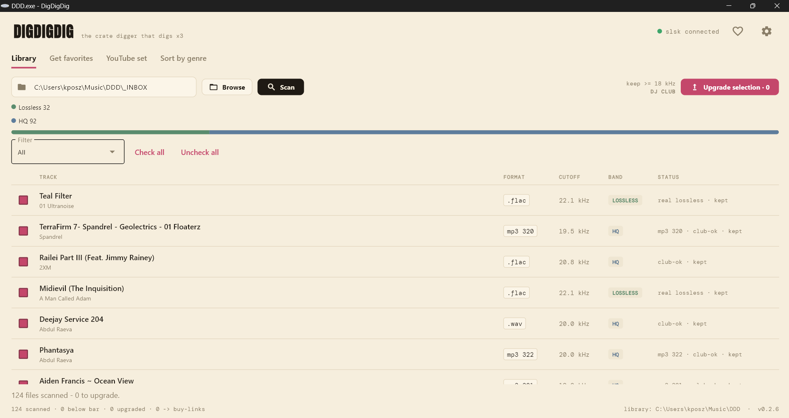
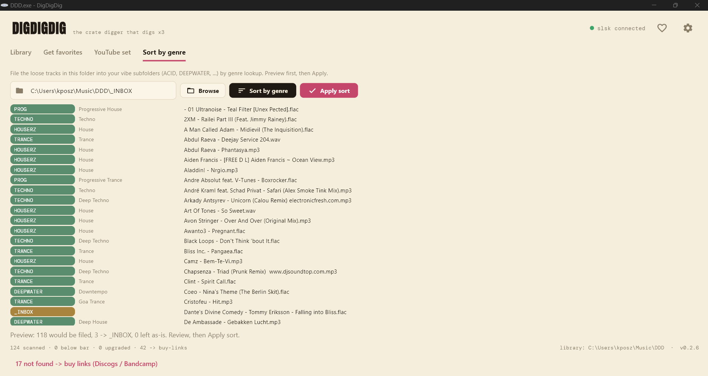
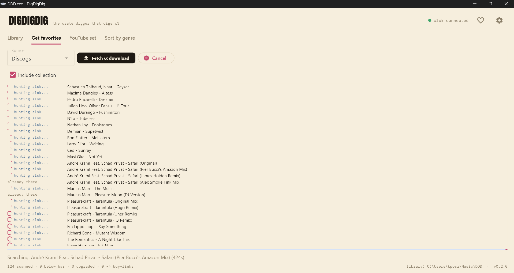
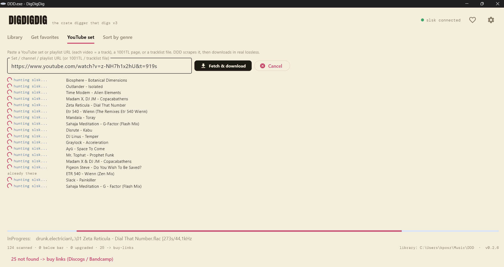

What is it?
DDD cleans up your music library and bumps it to club-playable quality, on its own. It unmasks fake lossless (MP3s disguised as .flac/.wav), finds a real version on Soulseek (FLAC, WAV or AIFF, with an automatic MP3 320 fallback), checks every file by spectrum, and files it into a clean library - sorted by genre from the audio itself, not the filename. No need to be a developer : it's a window.
Your sources
Scan any folder on your disk, pull your Discogs and Bandcamp favorites, or paste a YouTube set / playlist.
Soulseek
Looks for FLAC / WAV / AIFF, with an automatic MP3 320 fallback, live per-track status and automatic resume. Anything not found comes out as Discogs / Bandcamp buy links.
The spectrum
FFT analysis : ranks as Lossless / HQ / Iffy / Bad, plus duration and identity checks. Only the right track, above your bar, is kept.
What it looks like
Four tabs, a native window. No terminal.




The thing that changes everything : the spectrum is law
An MP3 320 re-encoded as FLAC is still an MP3. Soulseek's filters can't see it : the container proudly shows "1411 kbps". DDD looks at the real spectrum : a wall of frequencies at 16 kHz gives away the lossy source. The declared format and bitrate are only used for the Soulseek search, never for the keep-or-reject decision. The spectrum doesn't lie, tags do : that's what tells a real 320 / lossless apart from an upscale. Every downloaded file is re-audited (spectrum + duration + title/artist identity) and ranked by its real cutoff. You pick what DDD keeps - and what it hunts for : DJ Club (>= 18 kHz, default, MP3 320 included), Audiophile (>= 20 kHz), Purist (pure lossless), or a target-format mode - MP3 320 (vintage / mobile), WAV/AIFF only or FLAC only. MP3s below 320 kbps are banned no matter what ; the rest goes to the trash.
Sorted by the sound, not the name
"Sort by genre" files your loose tracks into your own vibe folders (ACID, DEEPWATER, HOUSERZ,
TECHNO, TRANCE, DISCO-FUNK, ...). It reads the ID3 genre tag, asks Discogs - and when both come up
empty, it classifies the audio with a local Discogs-EffNet model (400 Discogs styles, run
on-device, no cloud). So even a badly named, untagged, never-released edit lands in the right folder
instead of an _INBOX pile.
How it works
A few clicks in the window.
- Fill in your access (Settings) : Soulseek login, Discogs token, and the library folder.
- Scan a folder (or pull your favorites) : DDD ranks every file and spots duplicates.
- Upgrade : what passes your bar lands in your library, the rest goes to the trash.
- Sort by genre : file the whole pile into vibe folders, read from the spectrum. One clean, de-duplicated library.
- Identify (lost the names?) : recover Artist - Title for no-name files by acoustic fingerprint (AcoustID) - you confirm each match, then it renames + tags.
Also available on the command line : ddd scan, ddd upgrade,
ddd sort, ddd rename, ddd identify, ddd buy,
ddd scrape, ddd acquire, ddd config, ddd gui. Portable Python core
(Windows / Mac / Linux).